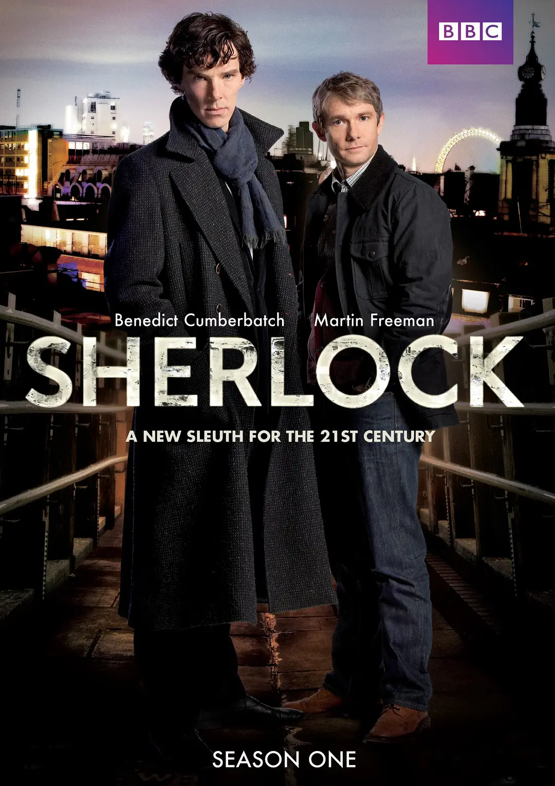
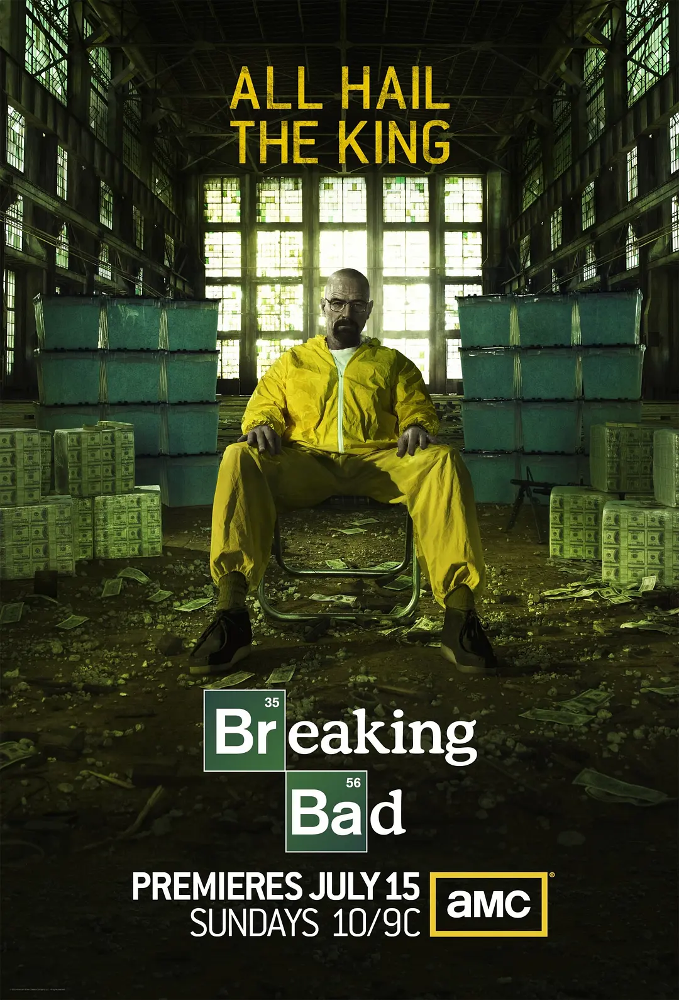
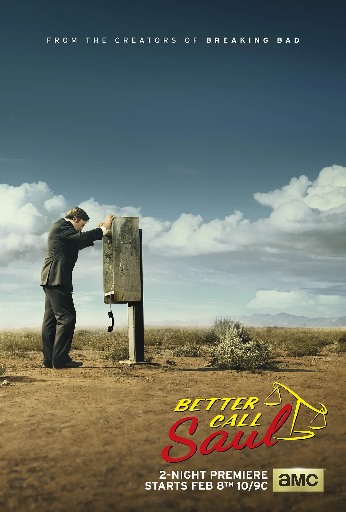
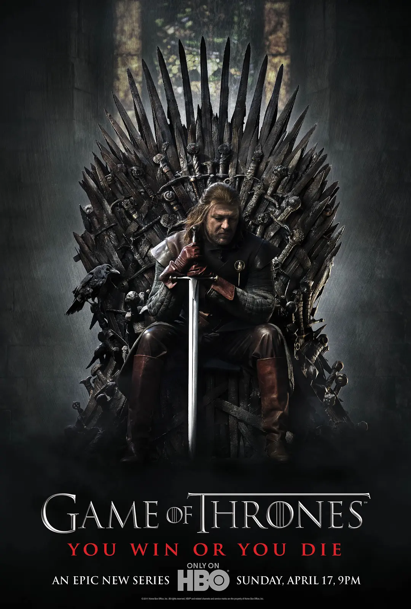
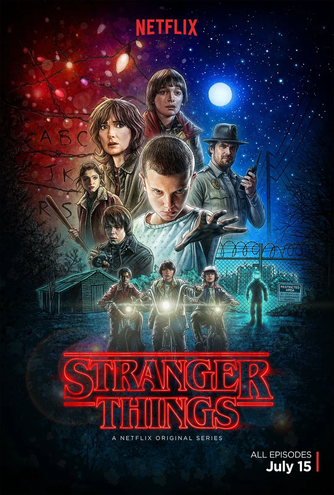
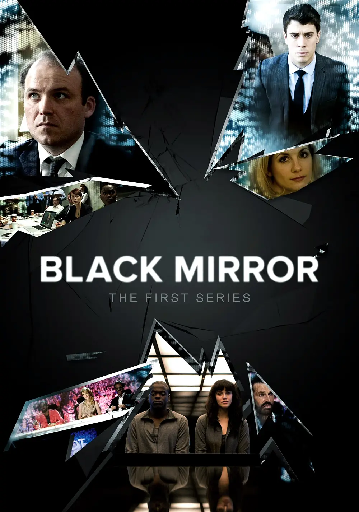
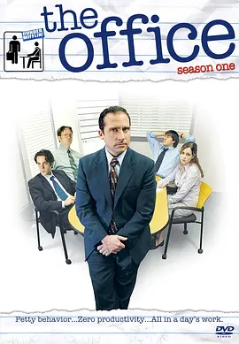
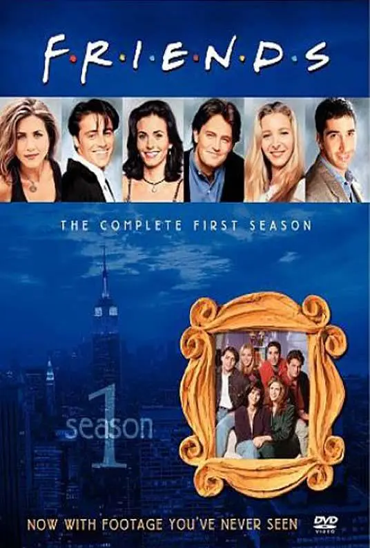
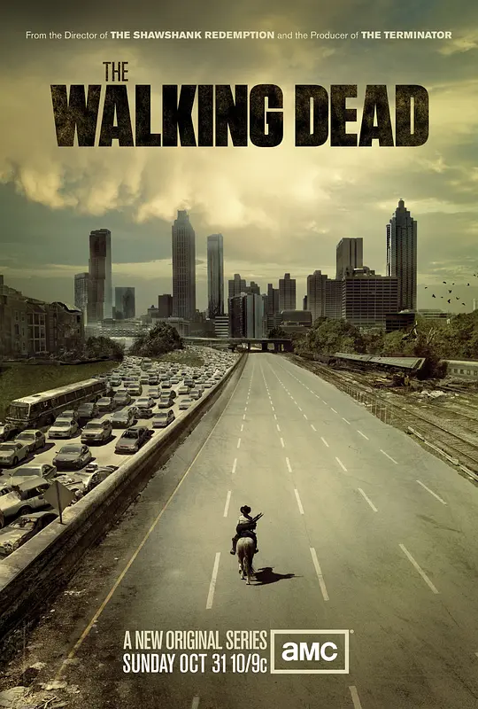

英剧 | 推理悬疑
英剧 | 推理悬疑
现代伦敦背景下的福尔摩斯探案故事，本尼迪克特·康伯巴奇主演，推理严密剧情紧凑，每季仅三集但质量极高，将经典侦探故事带入21世纪。

美剧 | 犯罪剧情
美剧 | 犯罪剧情
高中化学老师沃尔特·怀特在得知自己患癌后，开始制造并贩卖冰毒，逐步走向黑暗深渊。剧情紧凑、角色塑造深刻，被誉为美剧史上最伟大的作品之一。

美剧 | 律政剧情
美剧 | 律政剧情
绝命毒师前传，讲述吉米·麦吉尔如何从一个小律师成长为"索尔·古德曼"的故事。剧情细腻、人物刻画入微，延续了绝命毒师的高品质。

美剧 | 史诗奇幻
美剧 | 史诗奇幻
维斯特洛大陆上七大王国争夺铁王座的史诗故事，充满权谋、战争与奇幻元素。场面宏大、角色众多，是一部划时代的奇幻巨作。

美剧 | 科幻悬疑
美剧 | 科幻悬疑
80年代复古风格科幻悬疑剧，小镇上发生的超自然事件和孩子们的冒险故事。融合悬疑、科幻、恐怖元素，深受观众喜爱。

英剧 | 科幻讽刺
英剧 | 科幻讽刺
每集独立故事，探讨科技对人类社会和人际关系的负面影响，发人深省。风格暗黑、剧情反转不断，被称为"科技时代的黑童话"。

美剧 | 职场喜剧
美剧 | 职场喜剧
以伪纪录片形式展现办公室日常，幽默搞笑，角色鲜明。通过日常琐事展现职场人际关系和人性，轻松治愈。

美剧 | 经典喜剧
美剧 | 经典喜剧
纽约六个好友的生活故事，经典情景喜剧，陪伴无数人的青春。剧情轻松幽默、友情真挚，是一部经久不衰的经典。

美剧 | 丧尸末日
美剧 | 丧尸末日
丧尸末日世界中幸存者的求生故事，探讨人性在极端环境下的挣扎。场面震撼、剧情跌宕起伏，展现了末日生存的残酷与希望。